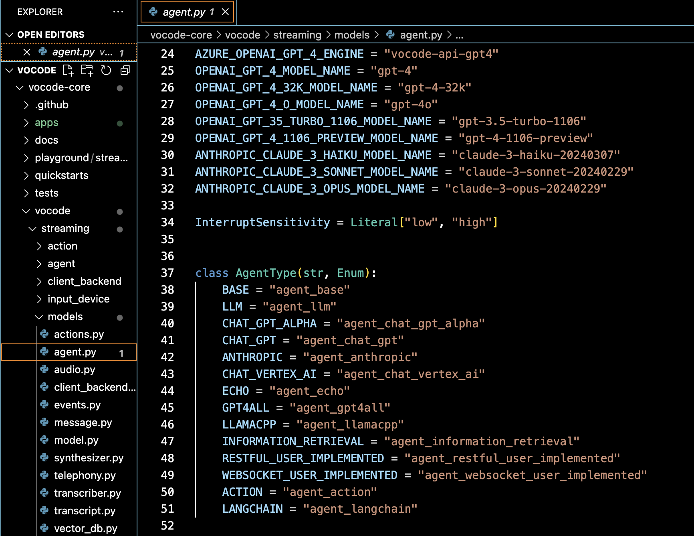
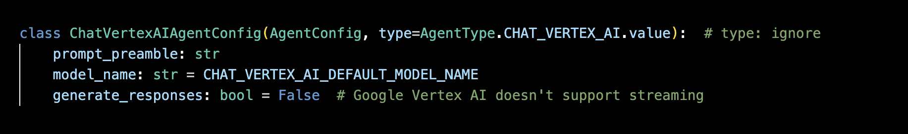

How to create a custom Agent for your use case.
To create a simple agent that can be passed into StreamingConversation, you can
subclass a RespondAgent. This involves three steps:
RespondAgent
In the examples below, we will create an agent called BrokenRecordAgent that responds
with the same message regardless of the input.
Each agent has a unique agent type string that is checked in various parts of Vocode, particularly in factories that create agents. Therefore, you must create a new type for your custom agent.
For example, see the AgentType enum in vocode/streaming/models/agent.py for example:

For our BrokenRecordAgent, we will use “agent_broken_record” as our type.
Your agent must have a corresponding agent config that is a subclass of AgentConfig and is JSON-serializable. Serialization
is automatically handled by Pydantic.
The agent config should only contain the information needed to deterministically create the same agent each time. This ensures that with the same parameters in your config, the corresponding agent will exhibit consistant behavior each time it is created.
For our BrokenRecordAgent, we will create a config like:
from vocode.streaming.models.agent import AgentConfig
class BrokenRecordAgentConfig(AgentConfig, type="agent_broken_record"):
message: str # The message we will always return
Now, you can create your custom agent subclass of RespondAgent. In your class header, pass in RespondAgent with a your agent type
as a type hint. This should look like RespondAgent[Your_Agent_Type].
Each agent should override the generate_response() async method to support streaming and respond() method to support
turn-based conversations.
If you want to support only turn-based conversations, you do not need to override the generate_response() method, but you MUST
set generate_response=False in your agent config (see ChatVertexAIAgentConfig in vocode/streaming/models/agent.py
for an example).

Otherwise, you must ALWAYS implement the generate_response() async method.
The generate_response() method returns an AsyncGenerator of tuples, each containing a message or sentence and a boolean indicating whether the message
can be interrupted by the human speaking. You can automatically create this generator by yield instead of return (see example below).
We will now define our BrokenRecordAgent. Since we simply return the same message each time, we can use return in respond() and yield in
generate_response() to provide that message:
class BrokenRecordAgent(RespondAgent[BrokenRecordAgentConfig]):
# is_interrupt is True when the human has just interrupted the bot's last response
def respond(
self, human_input, is_interrupt: bool = False
) -> tuple[Optional[str], bool]:
return self.agent_config.message
async def generate_response(
self, human_input, is_interrupt: bool = False
) -> AsyncGenerator[Tuple[str, bool], None]: # message and whether or not the message is interruptible
"""Returns a generator that yields the agent's response one sentence at a time."""
yield self.agent_config.message, False